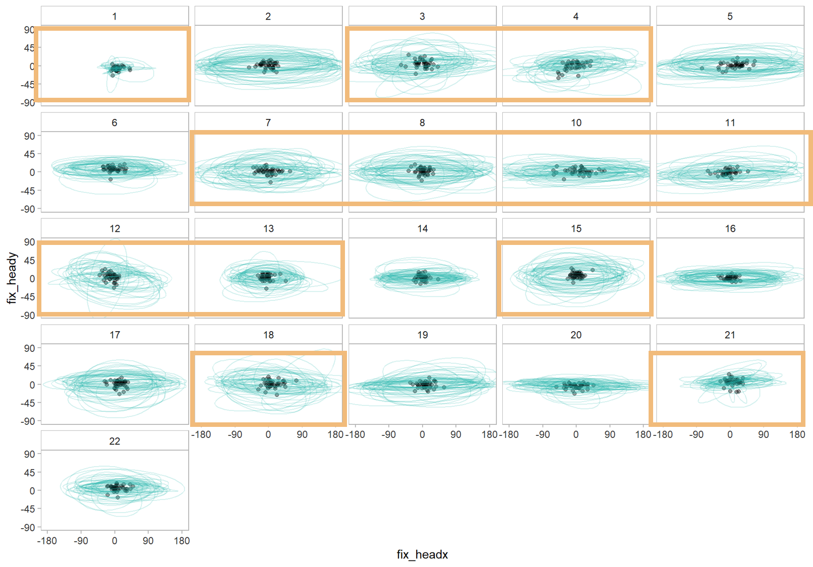
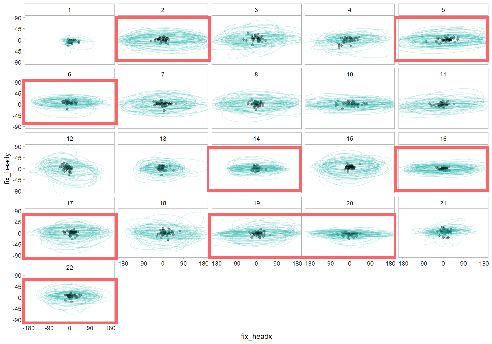

During the two months that I had worked as a Research Scientist at the Brain, Attention, and Reality Lab at UBC, I worked on a set of analyses to help characterize individual differences in the way people viewed scenes in a VR environment. Specifically, I used model-based clustering to examine whether there were consistent patterns in the way certain indivdiuals moved their heads.
Unlike eye movement research, which is well-understood in the field, there is relatively little research on individuals' head movement behaviour. One individual difference that researchers sometimes mention is pseudo-anecdotal data suggesting that individuals can either be categorized as either "movers" or "non-movers" based on how they moved their heads, though this claim has largely gone untested.
What I found through my preliminary analyses is that there are indeed two groups of individuals; however, as shown in the figures below, individuals' head movement patterns appear to be either "sporadic" or "stable".
A more detailed preliminary report of the results can be found here:
Part 1 |
Part 2 |
Part 3
"sporadic" head movement
"stable" head movement
